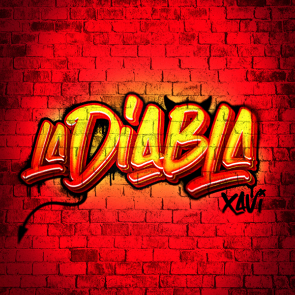
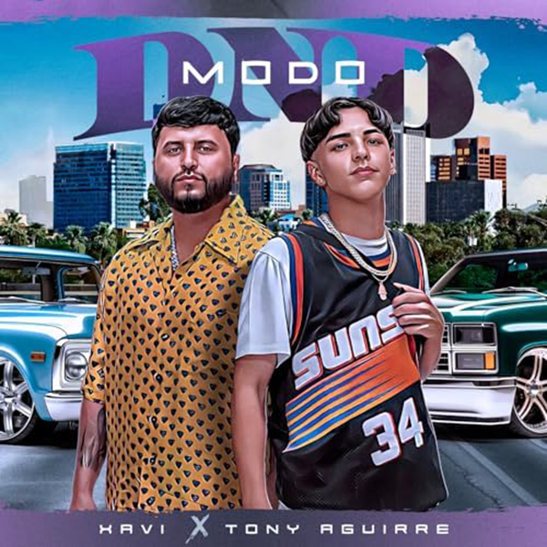

canciones

La diabla
Xavi
Poco a poco
Xavi, Los Dareyes De La Sierra

Modo DND
Xavi, Tony Aguirre

The sound of San Francisco
Global Deejays

So please
Los Cafres

Casi que me pierdo
Los Cafres

De mi mente
Los Cafres

Tus ojos
Los Cafres

Si el amor se cae
Los Cafres

Momento
Los Cafres
Aire
Los Cafres
Una perla en mi vida
Los Cafres

Suena la alarma
Los Cafres

La flor
Nompalidece

Love song
Nompalidece